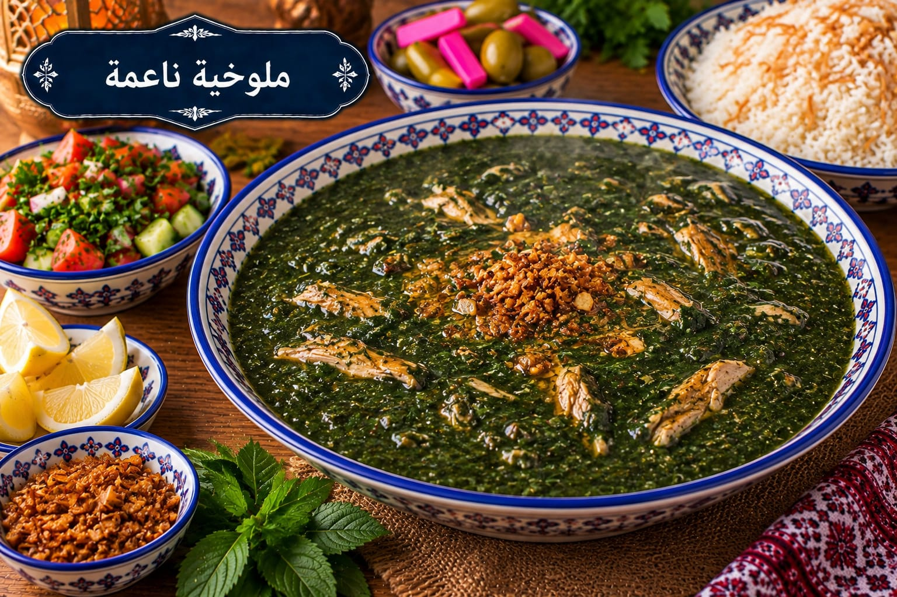

ملوخية ناعمة
ملوخية ناعمة بالثوم والكزبرة

مقادير ملوخية ناعمة
- 500 غ ملوخية ناعمة
- 5 أكواب مرق دجاج
- 6 فصوص ثوم
- 1 ملعقة كبيرة كزبرة ناشفة
- 1 ملعقة كبيرة سمنة
- 1¼ ملعقة صغيرة ملح أو حسب المرق
- ½ ملعقة صغيرة فلفل أسود
طريقة عمل ملوخية ناعمة
- سخني المرق حتى يقترب من الغليان ثم خففي النار.
- أضيفي الملوخية تدريجيًا مع التحريك حتى تتجانس، ولا تتركيها تغلي بعنف.
- حمري الثوم والكزبرة بالسمنة حتى تفوح الرائحة من دون حرق الثوم.
- أضيفي التقلية للملوخية وحركي، ثم عدلي الملح والفلفل واتركيها دقائق قليلة على نار هادئة قبل التقديم.